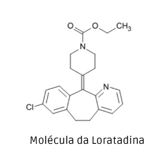
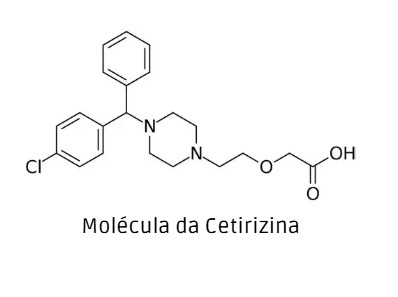
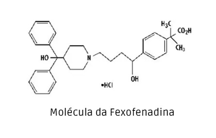

O que é alergia?
A alergia é uma reação exagerada do sistema imunológico a substâncias externas chamadas alérgenos...
Os sintomas incluem espirros, olhos lacrimejantes, congestão nasal, erupções cutâneas, dificuldade respiratória, entre outros.
Antialérgicos:
Primeira geração: clorfenamina, cinarizina, difenidramina
Segunda geração: loratadina, cetirizina, fexofenadina
Formas: orais, colírios, naturais (vitamina C, quercetina, probióticos, bromelaína)
Infantil: sempre com orientação médica
Nomeando anti-alérgicos (anti-histamínicos)
Atualmente exisem antialérgicos naturais, orais e em forma de colírios:
- Orais
Fexofenadina: indicado para o alívio das manifestações alérgicas, como rinite alérgica, nariz
entupido, coceira no nariz, céu da boca, garganta e olhos, coriza, conjuntivite alérgica com lacrimejamento e
vermelhidão dos olhos, alergia a pólen e urticária (erupções avermelhadas na pele que causam coceira).
Maleato de dexclorfeniramina: para alergia, prurido, rinite alérgica, urticária, picada de inseto, conjuntivite alérgica, dermatite atópica (um tipo de inflamação na pele) e eczemas alérgicos (dermatite).
Loratadina: indicado para o alívio dos sintomas associados com a rinite alérgica, como coriza, espirros, coceira ocular, nasal e ardor, urticária e outras afecções dermatológicas alérgicas.
- Colírios
Os colírios anti-histamínicos são medicamentos específicos para o alívio dos sintomas nos olhos, como coceira
e vermelhidão, pois bloqueiam a ação da histamina na região. São indicados em caso de quadros alérgicos
causados por poeira, pelos de animais, pólen, ácaros, entre outros.
- Anti-histamínicos naturais
Existem, ainda, os anti-histamínicos naturais ou fitoterápicos, ou seja, provenientes de plantas. Alguns
exemplos são:
Vitamina C: presente na laranja, no kiwi, e nos morangos, pode ajudar no alívio de sintomas
respiratórios
causados por certas reações alérgicas.
Quercetina: antioxidante presente na cebola, orégano, erva-doce, alface, espinafre e couve. Tem
propriedades
anti-histamínicas e pode ajudar a suprimir uma resposta alérgica.
Probióticos: microrganismos que vivem no sistema digestivo e que estão presentes nos iogurtes. Podem ajudar no tratamento de distúrbios do sistema imunológico, como é o caso das alergias.
Bromelaína: grupo de enzimas encontradas no abacaxi. Pode auxiliar no alívio da congestão nasal, um dos
sintomas de alergias respiratórias.
No entanto, ainda faltam estudos mais aprofundados sobre o assunto. É importante frisar que não há evidências
que comprovem que os antialérgicos naturais possam substituir os medicamentos tradicionais, principalmente em
caso de reações alérgicas fortes e graves, servindo mais como um tratamento complementar.
- Anti-histamínico infantil
Para administração de anti-histamínicos neste público, será fundamental conversar com um médico e/ou
farmacêutico, que indicará o melhor tratamento, de acordo com a faixa etária da criança e/ou peso.
Vale destacar que é imprescindível uma avaliação médica com um especialista para definir qual o melhor tipo de
antialérgico para cada caso e cada paciente. Além disso, alguns medicamentos podem interagir entre si, como
alguns tipos de antidepressivos.
Fontes bibliograficas para pesquisa de "alergia e Nomeando anti-alérgicos ":
NEO QUÍMICA. O que é anti-histamínico e quando usar cada tipo. Neo Química, 2023. Disponível em: https://www.neoquimica.com.br/blog/alergia/o-que-e-anti-histaminico-e-quando-usar-cada-tipo. Acesso em: 5 nov. 2025.

Loratadina
A loratadina (C₂₂H₂₃ClN₂O₂) é um medicamento anti-histamínico (antialérgico) de segunda geração, amplamente utilizado para aliviar os sintomas associados a reações alérgicas. O nome IUPAC (União Internacional de Química Pura e Aplicada) da loratadina é: éster etílico do ácido 4-(8-cloro-5,6-di-hidro-11H-benzo[5,6]cicloepta[1,2-b]piridin-11-ilideno)-1-piperidínocarboxílico.
A Loratadina atua bloqueando a ação da histamina, uma substância química liberada pelo corpo durante uma
reação alérgica. Ao antagonizar os receptores H1 periféricos(O receptor H1 é codificado no cromossomo humano 3, sendo o responsável por muitos sintomas das doenças alérgicas, tais como o prurido, a rinorreia, o broncoespasmo e a contração da musculatura lisa intestinal.), ela impede que a histamina desencadeie os
sintomas alérgicos, como inchaço e coceira.
- Modos de uso: A Loratadina é aprovada principalmente para os seguintes usos médicos:
Rinite alérgica: Ajuda a aliviar os sintomas associados a alergias sazonais (febre do feno) e rinite
alérgica
perene.
Urticária crônica: A Loratadina é eficaz no tratamento de urticária crônica, proporcionando alívio da
coceira
e do desconforto.
Outras reações alérgicas: Também pode ser usado para outras condições alérgicas, conforme determinado
por um
profissional de saúde.
Benefícios da Loratadina.
A loratadina oferece diversas vantagens clínicas e práticas:
- Não sedativo: É menos provável que cause sonolência em comparação aos anti-histamínicos de primeira geração, tornando-o adequado para uso diurno.
- Alívio duradouro: Uma única dose pode proporcionar alívio por até 24 horas, permitindo uma administração prática uma vez ao dia.
- Ampla disponibilidade: A loratadina está disponível sem receita, o que a torna facilmente acessível para quem sofre de alergias.
Contraindicações da loratadina.
Certos indivíduos devem evitar o uso de loratadina, incluindo:
- Mulheres grávidas ou amamentando: Consulte um profissional de saúde antes de usar.
- Uso durante a gravidez e lactação: A loratadina é geralmente considerada segura durante a gravidez e a amamentação. No entanto, consulte sempre o seu médico antes de usar qualquer medicamento durante a gravidez ou amamentação.
Indivíduos com doença hepática grave: Ajustes de dosagem podem ser necessários.
Reações alérgicas: Pessoas com alergia conhecida à Loratadina ou a qualquer um de seus componentes não devem tomá-la.
Funções presentes na loratadina:
As funções orgânicas presentes são: éster, amida terciaria e amina.
Fontes bibliograficas para pesquisa:
Apollo hospitals. Disponível em: https://www.apollohospitals.com/pt/medicines/loratadine#:~:text=A%20Loratadina%20%C3%A9%20um%20a nti%2Dhistam%C3%ADnico%20de%20segunda,urtic%C3%A1ria%20e%20outras%20rea%C3%A7%C3%B5 es%20al%C3%A9rgicas%20na%20pele. Acesso em 04/11/2025
Science Direct. Disponível em: https://www.sciencedirect.com/topics/medicine-and-dentistry/histamine-h1-receptor#:~:text=Os%20receptores%20de%20histamina%20H1,de%20doen%
C3%A7as%20al%C3%A9rgicas%20e%20anafilaxia.&text=Qu%C3%A3o%20%C3%
BAtil%20%C3%A9%20esta%20defini%C3%A7%C3%A3o?. Acesso em 04/11/2025

Cetirizina
A cetirizina (C₂₁H₂₇Cl₃N₂O₃) é um medicamento antialérgico pertencente à classe dos anti-histamínicos de segunda geração. Ela é utilizada para tratar sintomas de alergias, como coriza, espirros, coceira nos olhos, urticária e outras reações alérgicas de pele.O nome IUPAC da cetirizina é: ácido 2-[2-[4-[(4-clorofenil)-fenilmetil]piperazin-1-il]etoxi]acético.
Seu principal mecanismo de ação é bloquear os receptores H₁ da histamina, que é uma substância produzida pelo corpo que causa inflamação e sintomas alérgicos. Por ser uma droga de segunda geração, ela causa menos sonolência do que os anti-histamínicos mais antigos, como a difenidramina e a prometazina.
Modos de uso: A cetirizina é amplamente usada em tratamentos de curta e longa duração para:
Rinite alérgica (sazonal ou perene);
Urticária crônica idiopática;
Dermatites alérgicas;
Conjuntivite alérgica;
Alergias respiratórias leves.
Também é usada em algumas formulações infantis (xaropes e gotas), pois é bem tolerada e segura em doses
adequadas. Além de ser encontrada em várias formas farmacêuticas, dependendo da idade do paciente e da
necessidade do tratamento:
Comprimidos (geralmente 10 mg);
Comprimidos mastigáveis (para crianças);
Solução oral (xarope ou gotas);
Cápsulas gelatinosas (em algumas marcas);
A cetirizina deve ser ingerida por via oral, com ou sem alimentos, uma vez ao dia, geralmente no mesmo
horário. Pode ser tomada com um copo de água, e não deve ser mastigada (no caso de comprimidos comuns). O
medicamento começa a fazer efeito em cerca de 30 a 60 minutos após a ingestão e seu efeito dura até 24 horas,
o que permite uso diário único.
Benefícios da Cetirizina
A cetirizina é amplamente utilizada no tratamento de alergias respiratórias e cutâneas, sendo considerada
segura, eficaz e moderna. Por ser um anti-histamínico de segunda geração, ela apresenta diversas vantagens em
relação aos medicamentos mais antigos.
1-Alívio rápido dos sintomas alérgicos
Atua bloqueando os receptores H₁ da histamina, reduzindo sintomas como:
- Espirros;
- Coriza;
- Coceira nos olhos, nariz e garganta;
- Vermelhidão e inchaço na pele (urticária);
2-Efeito prolongado (24 horas)
Uma única dose diária é suficiente para controlar os sintomas durante o dia inteiro.
3-Pouca sonolência : Diferente de outros anti-histamínicos (como a difenidramina), a cetirizina atua
mais seletivamente no sistema nervoso periférico, o que minimiza a sedação.
4-Boa tolerância em crianças e idosos : É uma das opções mais seguras para uso pediátrico e em
tratamentos contínuos, quando usada nas doses corretas.
5-Não prejudica a concentração : A maioria das pessoas pode realizar atividades diárias (como
estudar, dirigir, trabalhar) sem prejuízo
cognitivo.
6-Baixo risco de interação medicamentosa : Pode ser usada junto com outros tratamentos de forma
segura, sob orientação médica.
Malefícios e Efeitos Adversos da Cetirizina
Apesar de ser um medicamento seguro, o uso da cetirizina pode causar
efeitos indesejáveis, especialmente se for usada em doses elevadas ou por longos períodos sem acompanhamento médico.
Efeitos colaterais mais comuns (geralmente leves):
- Sonolência leve (em algumas pessoas);
- Boca seca;
- Dor de cabeça;
- Fadiga ou sensação de cansaço;
- Tontura leve;
Esses sintomas costumam desaparecer com o tempo ou com ajuste de dose.
Efeitos colaterais menos comuns:
- Náusea e desconforto gástrico
- Irritação, agitação ou sonolência excessiva em crianças
- Reações cutâneas leves (vermelhidão, coceira)
Reações raras (mas graves, exigem atendimento médico imediato):
- Reação alérgica à própria cetirizina, com sintomas como inchaço no rosto, dificuldade para respirar ou urticária intensa.
- Distúrbios urinários (retenção de urina, principalmente em pessoas com problemas na próstata).
- Alterações hepáticas (muito raras, observadas em tratamentos prolongados).
-Convulsões (em pessoas com epilepsia ou sensibilidade neurológica).
Contraindicações da Cetirizina
A cetirizina é considerada um medicamento seguro e bem tolerado, mas não é indicada para todos os pacientes.
Algumas condições de saúde ou fatores específicos podem aumentar o risco de efeitos indesejáveis ou alterar a forma como o corpo elimina o remédio.
1. Hipersensibilidade (alergia ao medicamento)
A principal contraindicação é a alergia à própria cetirizina ou a qualquer um dos componentes da fórmula (como corantes, conservantes ou excipientes).
Sinais de reação alérgica incluem:
- Coceira intensa
- Vermelhidão ou urticária
- Inchaço nos lábios, olhos ou garganta
- Dificuldade para respirar
Se isso ocorrer, o uso deve ser interrompido imediatamente e procure atendimento médico.
2. Uso em crianças muito pequenas
- Menores de 2 anos: a cetirizina não deve ser usada sem prescrição médica.
- Para crianças pequenas, a dose deve ser cuidadosamente ajustada (geralmente em gotas ou xarope).
3. Problemas renais graves (insuficiência renal)
A cetirizina é eliminada principalmente pelos rins. Pessoas com função renal reduzida podem acumular o medicamento no organismo, o que aumenta o risco de efeitos colaterais como sonolência, tontura e fadiga.
Nesses casos, o médico deve:
- Reduzir a dose diária; ou
- Aumentar o intervalo entre as doses; ou
- Substituir por outro anti-histamínico mais seguro para o rim.
4. Uso em gestantes e lactantes
- Durante a gravidez: não há estudos suficientes que comprovem total segurança.
Por isso, o uso só é recomendado se o médico considerar essencial, avaliando riscos e benefícios.
- Durante a amamentação: a cetirizina pode passar para o leite materno, e embora em pequenas quantidades, não é recomendada sem orientação médica.
5. Pessoas com problemas hepáticos (no fígado)
Embora o fígado não seja a principal via de eliminação, em casos de doença hepática avançada (como hepatite ou cirrose), o metabolismo pode ficar alterado.
Nessas situações, o uso deve ser monitorado e ajustado pelo médico.
6. Uso concomitante com álcool ou sedativos
A cetirizina, mesmo sendo de segunda geração, pode potencializar o efeito sedativo de:
- Bebidas alcoólicas;
- Remédios calmantes, ansiolíticos ou indutores do sono;
Isso pode causar sonolência excessiva, lentidão de reflexos e redução da concentração. Evite combinar essas substâncias.
7. Pacientes com epilepsia ou distúrbios neurológicos
Em pessoas sensíveis, o uso da cetirizina pode alterar a excitabilidade do sistema nervoso central,
aumentando o risco de crises convulsivas — embora isso seja raro.
Deve ser usada com precaução e sob supervisão médica.
Funções presentes na cetirizina:
As funções orgânicas presentes são: Ácido carboxílico, amina terciária e éter.
Fontes bibliograficas para pesquisa:
Agência Nacional de Vigilância Sanitária. Disponível em: Anvisahttps://www.gov.br/anvisa
Cetirizine. Disponível em: https://www.drugs.com/cetirizine-hcl.html
asbai. Disponível em: https://www.asbai.org.br/

Fexofenadina
A fexofenadina(C₃₂H₃₉NO₄) é um anti-histamínico de segunda geração que age bloqueando os efeitos da histamina, uma substância produzida pelo corpo que causa os sintomas alérgicos. A sua fórmula química é a do cloridrato de fexofenadina, que é sintetizada a partir de compostos como o éster piperidina-4-carboxilato e 4-bromofenilacetonitrila através de uma série de reações químicas. O nome IUPAC da Fexofenadina é: ácido 2-[4-[1-hidroxi-4-[4-[hidroxi(difenil)metil]piperidin-1-il]butil]fenil]-2-metilpropanoico.
O cloridrato de fexofenadina é indicado para o tratamento de alergias das vias respiratórias, como a rinite alérgica, ajudando a aliviar os sintomas como espirros constantes, nariz escorrendo ou entupido, ou coceira no nariz. Além disso, alivia o lacrimejamento, coceira e ardência nos olhos.
O cloridrato de fexofenadina também é indicado para o tratamento de:
Urticária, um tipo de reação alérgica na pele, que causa coceira
intensa, formação de pequenas bolhas ou manchas vermelhas na pele. Indicado para o tratamento de:
Rinite
alérgica;
Conjuntivite;
Eczema;
Picadas e ferroadas de insetos.
Efeitos colaterais: Quando
se manifestam, os efeitos colaterais da fexofenadina tendem a ser leves e melhorar com o tempo. Eles
incluem:
Dor de cabeça;
Tontura;
Diarreia;
Vômito;
Dor nos braços, pernas ou costas;
Tosse.
Vale destacar que, diferentemente de outros anti-histamínicos, como hidroxizina e prometazina, a
fexofenadina não interfere
no funcionamento dos receptores de histamina presentes no sistema nervoso central. Na prática, isso
significa
que o medicamento não leva a pessoa a apresentar tanta sonolência ou cansaço.
Contraindicações
Além de ser
contraindicada a pessoas que já tenham enfrentado episódios de alergia à fexofenadina ou a qualquer um
de seus
componentes, o medicamento deve ser evitado por quem tem histórico de problemas no fígado, nos rins e no
coração. O mesmo vale para indivíduos que apresentem epilepsia ou outra condição de saúde que os coloque
em
risco de convulsões. A fexofenadina não deve ser usada por mulheres grávidas ou em amamentação, ou por
pessoas
que tenham alergia ao cloridrato de fexofenadina ou a qualquer componente da fórmula. Além disso, os
comprimidos de fexofenadina não devem ser usados por crianças com menos de 12 anos. Já a fexofenadina
xarope
pediátrico não deve ser usada por crianças com menos de 6 meses, para o tratamento da urticária
idiopática
crônica, ou por crianças com menos de 2 anos para o tratamento da rinite alérgica sazonal.
Funções presentes na fexofenadina:
As funções orgânicas presentes são: Amina terciária, ácido carboxílico e álcool.
Fontes bibliograficas para pesquisa:
Vida sáudavel - Einstein Disponível em :https://vidasaudavel.einstein.br/fexofenadina-saiba-para-que-serve-e-os-efeitos-colaterais-do-antialergico/
cloridrato de Fexofedina. Disponível em: https://pubchem.ncbi.nlm.nih.gov/compound/Fexofenadine-Hydrochloride#section=Names-and-Identifiers
Fexofedina - para que serve Disponível em: https://www.tuasaude.com/fexofenadina/